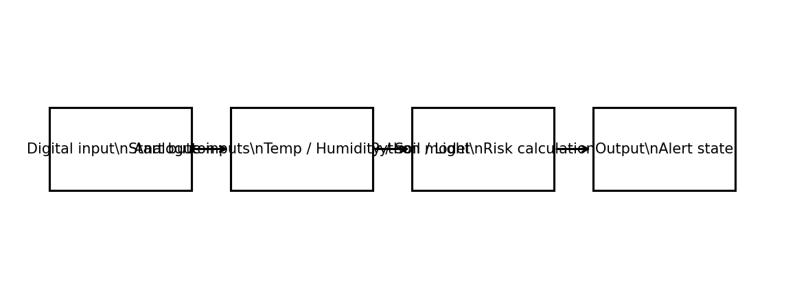
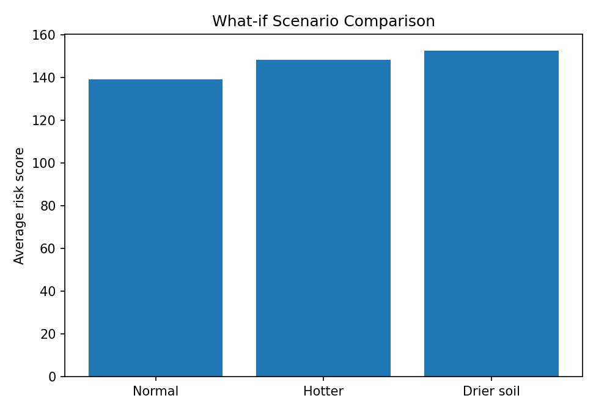

This report is presented as a local website and should be opened using index.html.
1. Meeting the brief
This project is a simulated forest fire risk monitoring system. It was designed around the theme of forests and climate. The system collects environmental data that is linked to wildfire conditions. The data includes temperature, humidity, soil moisture and light intensity. A digital start button is used to begin the system and the environmental values are treated as analogue inputs. The main output of the system is an alert state that changes according to risk.
The artefact first collects and stores environmental data in a CSV file. This data is then analysed in Python using a wildfire risk formula. The model increases the score when temperature is high, humidity is low, soil moisture is low and light intensity is high. If the risk score becomes very high, the system responds automatically by producing a red alert. This makes the system adaptive because the output changes when the latest data changes.
The project also includes two what-if simulations. In the first scenario the temperature is increased by five degrees. In the second scenario the soil becomes drier. Both scenarios lead to higher average risk scores. The video shows the code running, the files being created, the risk results and the alert output.
Replace the placeholder video.mp4 in this folder with the student’s own recorded demo before submission.
System architecture

Sample risk output
2. Investigation
I began by researching why forests are important and why wildfire risk is increasing. Forests store carbon, support biodiversity and help to regulate climate. However, hotter weather, drier conditions and long periods without rainfall can make forests more vulnerable to fire. I then researched how environmental monitoring systems work. Many systems use sensors to measure temperature, humidity or soil moisture. These readings are sent to a program that analyses the data and identifies danger.
I looked at examples of weather monitoring systems, wildfire early warning systems and classroom sensor projects. From this research I decided that my project should focus on wildfire risk because it is easy to connect environmental readings to a meaningful output. I also found that soil moisture is a useful variable because dry ground often increases fire danger. My project uses stored environmental data and a Python model rather than physical hardware, but it follows the same logic as an embedded monitoring system. This research helped me choose the inputs, the alert output and the what-if scenarios.
3. Plan and design
At the planning stage I considered a number of possible project ideas. These included a simple plant watering monitor, a forest biodiversity counter and a forest fire risk system. I chose the wildfire risk system because it matched the brief closely. It allowed me to include environmental data collection, process simulation, predictive analysis and an adaptive response in one project.
The main stakeholders are forest managers, environmental researchers and local authorities. Forest managers may use such a system to identify dangerous conditions early. Researchers may use the data to study patterns and compare scenarios. The needs of the end user are that the system should be clear, simple and easy to test.
The technologies used are Python, CSV files, HTML and CSS. Python was chosen because it is required for the advanced modelling part and it is suitable for data handling. The report website was created in HTML so it can be opened locally without an internet connection. CSV files were used to store and process the environmental data.
The architecture is straightforward. A digital start input begins the system. Simulated analogue sensor values are collected and stored. The wildfire model reads the stored data and calculates a risk score. The adaptive output then decides whether the system should remain green, move to amber, or trigger a red alert. This structure makes the data flow easy to explain and easy to test.
4. Create
The first milestone was creating the data collection script. This script acts as the embedded system controller. It uses a simulated start button and generates environmental readings for thirty days. The readings are written to a CSV file so that the data can be reused by the model. I tested this part by checking that the file was created correctly and that each row contained values in a realistic range.
The second milestone was building the wildfire risk model. I created a weighted formula that combines temperature, humidity, soil moisture and light intensity into a single risk score. I tested the model by checking that hotter and drier readings produced higher scores than cooler and wetter readings. This confirmed that the model behaved logically.
The third milestone was adding the adaptive system response. The program converts the risk score into three alert states: green, amber and red. A red alert is shown automatically when the score reaches a high threshold. This means the system reacts to changing data without needing the user to make another decision.
The fourth milestone was creating the what-if simulations. I built two scenario tests. In the first test temperature was increased by five degrees. In the second test soil moisture was reduced by fifteen percent. The program then calculated new risk scores and compared them with the original average risk. Both tests increased the predicted risk, which supported the model.
A problem I encountered was deciding how to combine the environmental variables fairly. At first the score changed too sharply when one value changed. To solve this, I adjusted the weights and tested the output several times until the results looked more balanced and realistic.
Overall, the final artefact includes a data collection stage, a risk model, two simulations and an adaptive alert mechanism. The complete process can be run in sequence using the three Python files in the Artefact folder.
What-if scenario comparison

5. Evaluation
The finished artefact meets the main goals of the project. It collects environmental data, stores it, analyses it with a Python model and automatically responds when the risk becomes high. It also includes two what-if simulations, which helps to show how future conditions could affect forest fire risk. The structure of the project is clear and the files are easy to follow.
One strength of the project is its simplicity. The user can run the programs in sequence and understand the result. Another strength is that the scenario testing gives a useful comparison between normal and changing environmental conditions.
A limitation is that the project uses simulated data rather than live sensors. In a future version I would improve the artefact by connecting real hardware such as a microcontroller and environmental sensors. I would also add a live dashboard and allow the threshold values to be adjusted by the user. Even with these limitations, the project demonstrates the core ideas of monitoring, modelling and adaptive response.